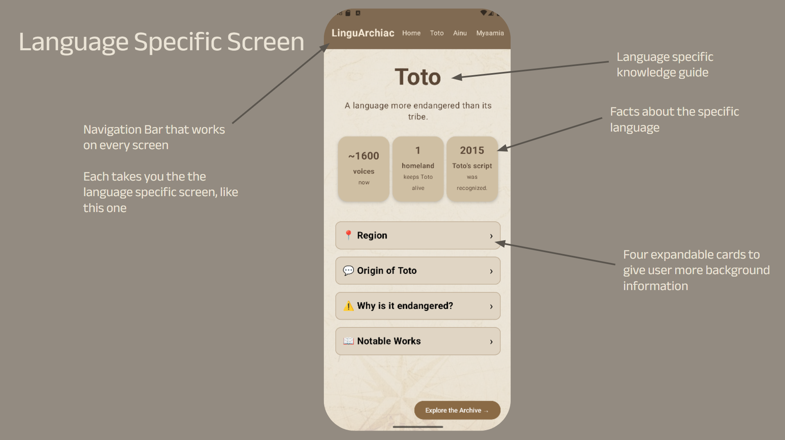

LANGUAGE DETAILS
Each Language Has It's Own Story

This screen allows for users to learn more about the history of the language before diving into a story. With this screen, we can fully appreciate the language, and see it beyond it being "just an endangered" language. Each and every language in the archive is so much more than that. They comunicate deeper common themes, such as mother-son bonding, sibling rivalry, or believing in God. We can immerse ourselves in the beauty of the language, through learning the basics.
Here, you can learn the origin of the language, the language family, why it is endangered, and notable works written in this language. Additionally, there are a few facts that are important to know when understanding the roots of the language.